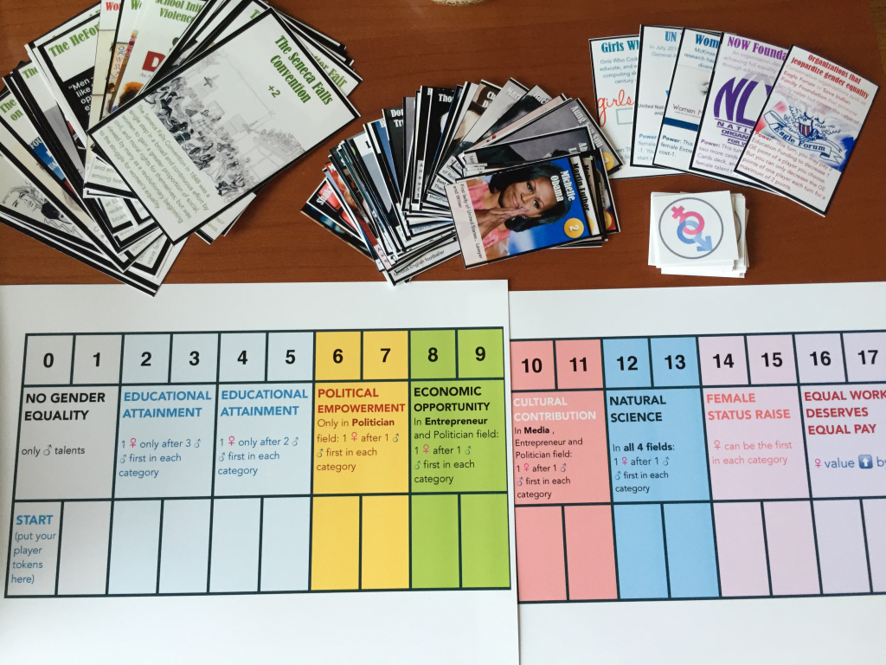
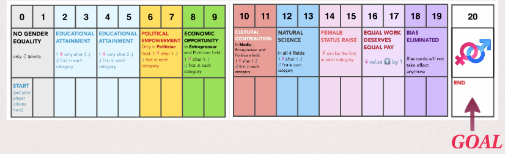

A Path To Gender Equality
MY ROLES
Product Manager
Game Designer
DATE
Nov 2014 - Dec 2014
METHODS & TOOLS
Literature Review
User Testing
APPROACHES
Prototyping
"A Path To Gender Equality" is a multi-player board game aims to raise players’ awareness of gender equality. The original idea was developed in a Game Design course and was selected later to be presented on CUNY Game Festival 2016, one of the leading game-based learning conferences in NYC.
Problem Statement
According to the report that United Nations issued, gender equality status improved significantly from 1990 to 2010, but the current statistics still reveal a big gender gap.That's why our team designed the board game. Our goal is to raise awareness of the gender issues, spark conversations and encourage women to join STEM field through game play.
Design Rationale
The game would create an alternative world suffering from the consequences of gender inequality in four professional areas. By designing the game mechanism this way, players are put into a situation where they wouldn't explicitly experience in the real life. Through the game, player will build a more gender balanced society and acquire the value of such society.
Players will learn about the causation, conservation and consequences of gender inequality. They will encounter events and processes involved in the efforts made and can be made to promote gender equality, the organizations that work towards it, as well as male and female role models in real world across different professions. Cards serve to expose players to the different theories and myths to explain the origins and persistence of gender culture and inequality, the issues around gender equality like gender biases, related remarkable events in history, behaviors, attitudes, role of socialization, tradition and biology.
Game Mechanics
Player Age:12+
Number of player:2-4

Role: Designed the game mechanics and game aesthetic, developed different versions of prototype through multiple user tests
- Date: Nov - Dec, 2014
- Service: Game Design,